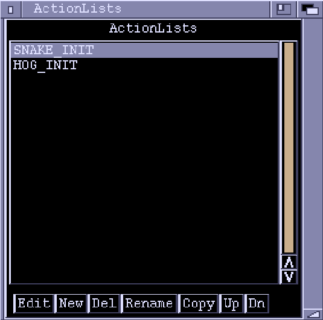
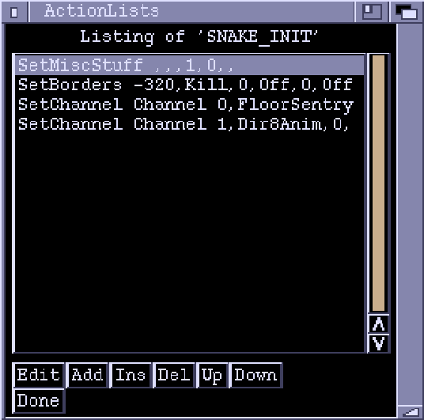

ActionLists Window
Note
See Actions for a complete list of Actions.
ActionLists

The ActionLists window starts off displaying a list of all the ActionLists in the chunk.
ActionLists
A List of the ActionLists in the chunk.
Double-clicking an ActionList has the same effect as highlighting it and
then clicking the "Edit" gadget.
Edit
Switches to editing mode for the highlighted ActionList. See below.
New
Creates a new, empty, ActionList. You are prompted for a name.
Del
Deletes the highlighted ActionList.
Rename
Renames the highlighted ActionList.
Copy Creates a new ActionList, copying the contents from another.
Up
Moves the highlighted ActionList one position up. A purely cosmetic option
as the order is unimportant.
Dn Moves the highlighted ActionList one position down.
Editing Mode

In editing mode the window layout changes:
Listing of...
A list of the Actions in the ActionList.
Edit
Brings up another window to edit the parameters of the highlighted action.
The parameter-editing windows contents depend on the particular action. If an
action has a lot of parameters, they will occupy more than one 'page'. You
can flick between the pages using the Next > and < Prev buttons. When the
parameters have been set to the values you want, click "OK". The window close
gadget has the same effect.
Add
Add another action at the end of the ActionList. A requester will come up
prompting you to select an action. The left part of the requester lists
various categories of actions, while the right part lists the actions in the
selected category. The "All" category lists every action.
Ins
Inserts an action before the highlighted one. Again, a requester will appear
to let you select the action.
Del
Deletes the highlighted action.
Up
Moves an action one position up the list. Order can sometimes be important
(in the game, the actions will be executed from top to bottom).
Down
Moves an action one position down.
Done
Exits editing mode and returns to the list of ActionLists. The close gadget
of the window has the same effect.